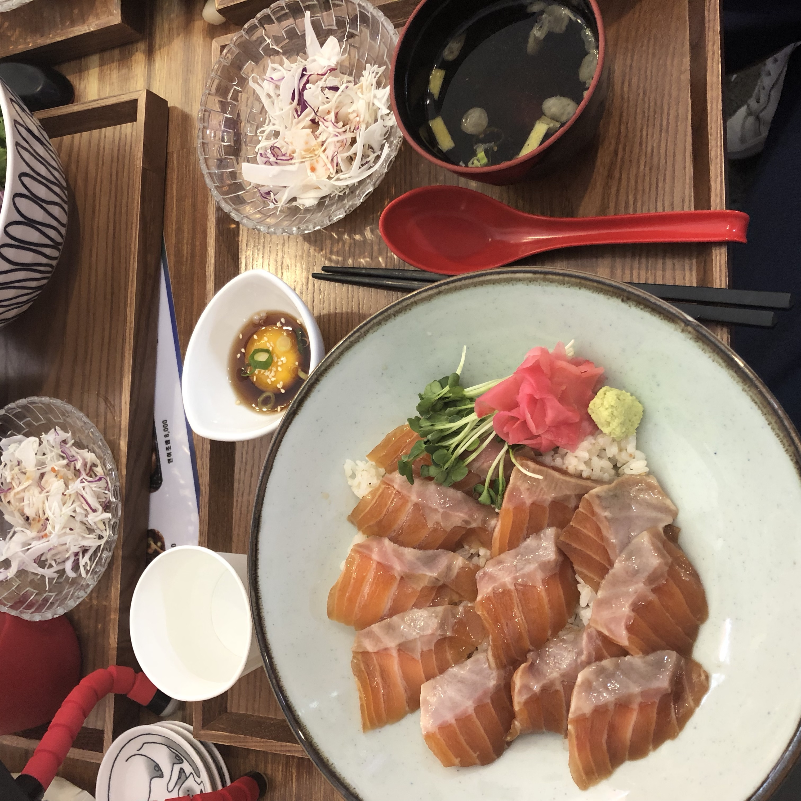

연어상점

연어상점은 고시촌에 위치한 연어 위주 일식 가게입니다.
새우장 덮밥이나 우동 등도 있어서 연어를 먹지 못하여도 맛있게 먹을 수 있습니다.
모든 덮밥류가 8000원이라서 싼 가격에 먹을 수 있습니다.
덮밥류를 시키면 밥이 무한리필이 가능합니다.
우동이 크기도 크고 가격도 4000원 밖에 하지 않아 가성비가 좋습니다.
샐러드와 간장노른장, 따뜻한 국물이 함께 나옵니다.
단점은 직원이 한 분 밖에 안 계셔서 나오는데 시간이 조금 소요됩니다.
주소 : 서울 관악구 신림로17길 53
고시촌 미식회 별점:★★★★
▲ 위 사진을 누르시면 연어상점의 자세한 정보를 보실 수 있습니다.